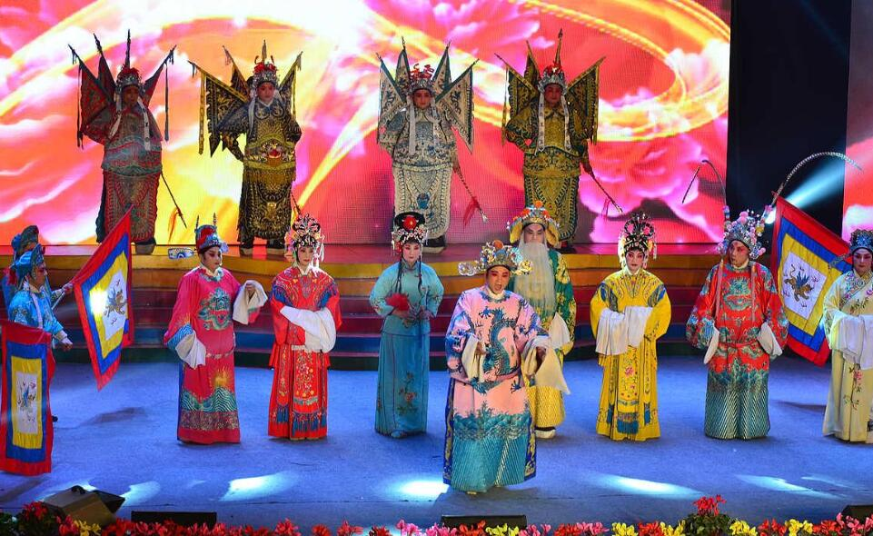

四平调

四平调，是地方传统戏剧之一，由豫东花鼓演变而成，后经过挖掘整理，吸收评剧、京剧、豫剧等的腔调发展而成，逐渐完善形成了其特有的唱腔及表演风格。为花鼓曲调配乐，以六棱高胡作为领弦乐器，以梆子戏的打击乐器烘托气氛，取花鼓戏唱腔“四平八稳”之意，形成了独具地方特色，贴近百姓生活的地方剧种。
由于四平调的演变发展过程脉络清晰，有证有据，被业内专家称之为“中国戏曲发展的缩影”，在中国戏曲艺术的发展演变过程中有着特殊的地位，一百多年来，四平调饱含了民间艺人的心血与智慧，为古黄河两岸方圆数百公里的人民留下了深受群众喜爱的优秀地方戏曲。
作为一种稀有的地方剧种，四平调仅流行于河南、安徽、山东、江苏四省接壤地区，因它以花鼓为主，吸收评剧、京剧、梆子等剧种的曲调而形成，有人也称它为"四拼调"，后改称"四平调"。也有人认为，是根据其曲调四平八稳、四句一平而得名。四平调在中国的传统戏曲艺术中有着特殊的地位，是中国民间艺术中的一朵奇葩。
2006年5月20日，“商丘四平调”经国务院批准列入第一批国家级非物质文化遗产名录。2008年，“金乡四平调”经国务院批准列入第二批国家级非物质文化遗产名录。2014年12月3日，“砀山四平调”经国务院批准列入第四批国家级非物质文化遗产名录。2019年11月，四平调列入国家级非物质文化遗产代表性项目保护单位名单。